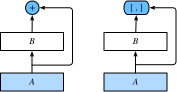

ResNet中的跨层连接设计引申出了数个后续工作。本节我们介绍其中的一个：稠密连接网络（DenseNet） [1]。 它与ResNet的主要区别如图5.10所示。

图5.10中将部分前后相邻的运算抽象为模块$A$和模块$B$。与ResNet的主要区别在于，DenseNet里模块$B$的输出不是像ResNet那样和模块$A$的输出相加，而是在通道维上连结。这样模块$A$的输出可以直接传入模块$B$后面的层。在这个设计里，模块$A$直接跟模块$B$后面的所有层连接在了一起。这也是它被称为“稠密连接”的原因。
DenseNet的主要构建模块是稠密块（dense block）和过渡层（transition layer）。前者定义了输入和输出是如何连结的，后者则用来控制通道数，使之不过大。
DenseNet使用了ResNet改良版的“批量归一化、激活和卷积”结构（参见上一节的练习），我们首先在conv_block函数里实现这个结构。
```{.python .input n=1} import d2lzh as d2l from mxnet import gluon, init, nd from mxnet.gluon import nn
def conv_block(num_channels): blk = nn.Sequential() blk.add(nn.BatchNorm(), nn.Activation('relu'), nn.Conv2D(num_channels, kernel_size=3, padding=1)) return blk
稠密块由多个`conv_block`组成，每块使用相同的输出通道数。但在前向计算时，我们将每块的输入和输出在通道维上连结。
```{.python .input n=2}
class DenseBlock(nn.Block):
def __init__(self, num_convs, num_channels, **kwargs):
super(DenseBlock, self).__init__(**kwargs)
self.net = nn.Sequential()
for _ in range(num_convs):
self.net.add(conv_block(num_channels))
def forward(self, X):
for blk in self.net:
Y = blk(X)
X = nd.concat(X, Y, dim=1) # 在通道维上将输入和输出连结
return X
在下面的例子中，我们定义一个有2个输出通道数为10的卷积块。使用通道数为3的输入时，我们会得到通道数为$3+2\times 10=23$的输出。卷积块的通道数控制了输出通道数相对于输入通道数的增长，因此也被称为增长率（growth rate）。
```{.python .input n=8} blk = DenseBlock(2, 10) blk.initialize() X = nd.random.uniform(shape=(4, 3, 8, 8)) Y = blk(X) Y.shape
## 过渡层
由于每个稠密块都会带来通道数的增加，使用过多则会带来过于复杂的模型。过渡层用来控制模型复杂度。它通过$1\times1$卷积层来减小通道数，并使用步幅为2的平均池化层减半高和宽，从而进一步降低模型复杂度。
```{.python .input n=3}
def transition_block(num_channels):
blk = nn.Sequential()
blk.add(nn.BatchNorm(), nn.Activation('relu'),
nn.Conv2D(num_channels, kernel_size=1),
nn.AvgPool2D(pool_size=2, strides=2))
return blk
对上一个例子中稠密块的输出使用通道数为10的过渡层。此时输出的通道数减为10，高和宽均减半。
```{.python .input} blk = transition_block(10) blk.initialize() blk(Y).shape
## DenseNet模型
我们来构造DenseNet模型。DenseNet首先使用同ResNet一样的单卷积层和最大池化层。
```{.python .input}
net = nn.Sequential()
net.add(nn.Conv2D(64, kernel_size=7, strides=2, padding=3),
nn.BatchNorm(), nn.Activation('relu'),
nn.MaxPool2D(pool_size=3, strides=2, padding=1))
类似于ResNet接下来使用的4个残差块，DenseNet使用的是4个稠密块。同ResNet一样，我们可以设置每个稠密块使用多少个卷积层。这里我们设成4，从而与上一节的ResNet-18保持一致。稠密块里的卷积层通道数（即增长率）设为32，所以每个稠密块将增加128个通道。
ResNet里通过步幅为2的残差块在每个模块之间减小高和宽。这里我们则使用过渡层来减半高和宽，并减半通道数。
```{.python .input n=5} num_channels, growth_rate = 64, 32 # num_channels为当前的通道数 num_convs_in_dense_blocks = [4, 4, 4, 4]
for i, num_convs in enumerate(num_convs_in_dense_blocks): net.add(DenseBlock(num_convs, growth_rate)) # 上一个稠密块的输出通道数 num_channels += num_convs * growth_rate # 在稠密块之间加入通道数减半的过渡层 if i != len(num_convs_in_dense_blocks) - 1: num_channels //= 2 net.add(transition_block(num_channels))
同ResNet一样，最后接上全局池化层和全连接层来输出。
```{.python .input}
net.add(nn.BatchNorm(), nn.Activation('relu'), nn.GlobalAvgPool2D(),
nn.Dense(10))
由于这里使用了比较深的网络，本节里我们将输入高和宽从224降到96来简化计算。
{.python .input}
lr, num_epochs, batch_size, ctx = 0.1, 5, 256, d2l.try_gpu()
net.initialize(ctx=ctx, init=init.Xavier())
trainer = gluon.Trainer(net.collect_params(), 'sgd', {'learning_rate': lr})
train_iter, test_iter = d2l.load_data_fashion_mnist(batch_size, resize=96)
d2l.train_ch5(net, train_iter, test_iter, batch_size, trainer, ctx,
num_epochs)
[1] Huang, G., Liu, Z., Weinberger, K. Q., & van der Maaten, L. (2017). Densely connected convolutional networks. In Proceedings of the IEEE conference on computer vision and pattern recognition (Vol. 1, No. 2).